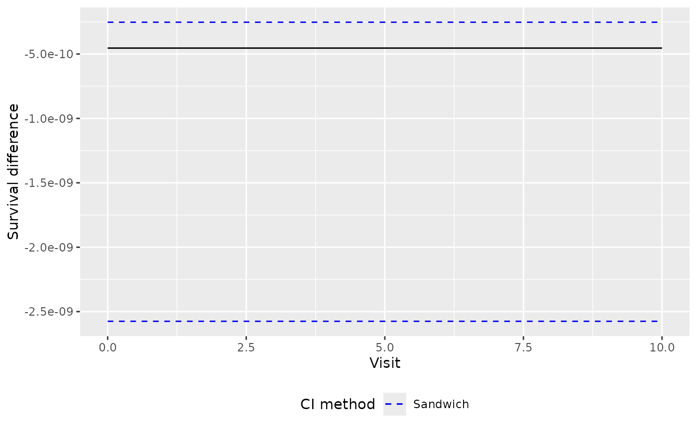
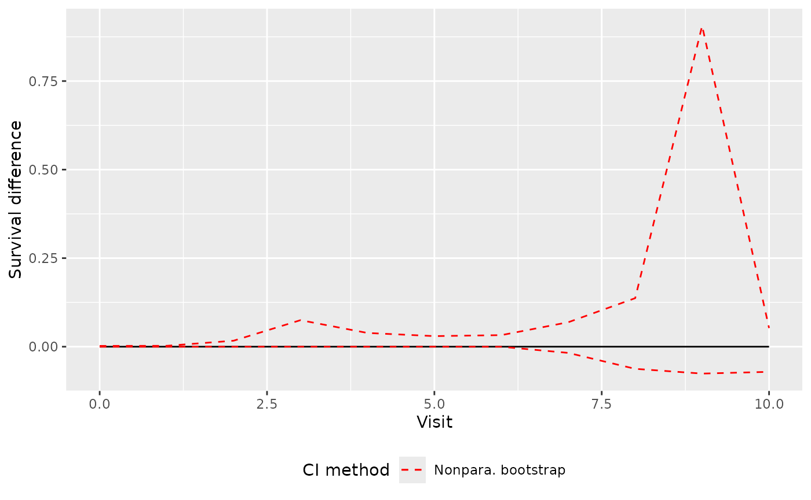
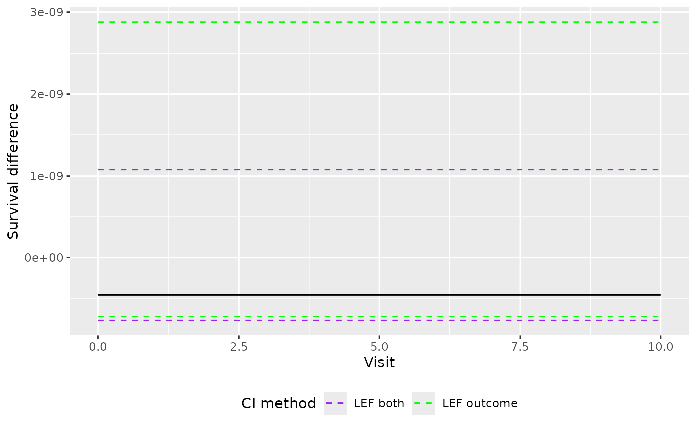
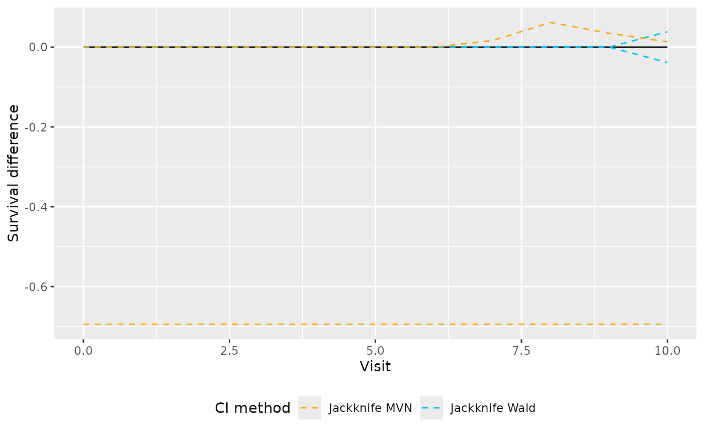

Confidence Interval Methods
Source:vignettes/articles/confidence_intervals.Rmd
confidence_intervals.RmdConfidence Interval Methods
This vignette demonstrates the confidence interval methods available for per-protocol effect estimation and inference.
Confidence intervals are obtained through the predict()
method for fitted trial_sequence objects. The confidence
interval method is controlled through the ci_type
argument.
Currently available methods are:
"sandwich""Nonpara. bootstrap""LEF outcome""LEF both""Jackknife Wald""Jackknife MVN"
The default method uses the sandwich variance estimator. Alternative methods based on bootstrap and jackknife resampling can be useful in settings with smaller sample sizes, sparse outcomes, or low treatment prevalence [1].
Example Analysis
We begin by fitting a simple per-protocol target trial emulation.
Create a Trial Sequence Object
trial_pp <- trial_sequence(estimand = "PP")
trial_pp_dir <- file.path(tempdir(), "trial_pp")
dir.create(trial_pp_dir)
data("data_censored")
trial_pp <- trial_pp |>
set_data(
data = data_censored,
id = "id",
period = "period",
treatment = "treatment",
outcome = "outcome",
eligible = "eligible"
) |>
set_switch_weight_model(
numerator = ~age,
denominator = ~ age + x1 + x3,
model_fitter = stats_glm_logit(
save_path = file.path(trial_pp_dir, "switch_models")
)
) |>
set_censor_weight_model(
censor_event = "censored",
numerator = ~x2,
denominator = ~ x2 + x1,
pool_models = "none",
model_fitter = stats_glm_logit(
save_path = file.path(trial_pp_dir, "censor_models")
)
) |>
calculate_weights() |>
set_outcome_model() |>
set_expansion_options(
output = save_to_datatable(),
chunk_size = 500
) |>
expand_trials() |>
load_expanded_data() |>
fit_msm()Sandwich Confidence Intervals
The sandwich variance estimator is the default confidence interval method. It uses the robust variance-covariance matrix estimate of the marginal structural model parameters together with multivariate Normal sampling.
pred_sandwich <- predict(
trial_pp,
newdata = outcome_data(trial_pp)[trial_period == 1, ],
predict_times = 0:10,
type = "survival",
conf_int = TRUE,
ci_type = "sandwich"
)
head(pred_sandwich$difference)
#> followup_time survival_diff 2.5% 97.5%
#> 1 0 -4.538847e-10 -2.575032e-09 -2.530313e-10
#> 2 1 -4.538847e-10 -2.575032e-09 -2.530313e-10
#> 3 2 -4.538847e-10 -2.575032e-09 -2.530313e-10
#> 4 3 -4.538847e-10 -2.575032e-09 -2.530313e-10
#> 5 4 -4.538847e-10 -2.575032e-09 -2.530313e-10
#> 6 5 -4.538847e-10 -2.575032e-09 -2.530313e-10This is the fastest confidence interval method and is often suitable for larger datasets.
library(ggplot2)
ggplot(
as.data.frame(pred_sandwich$difference),
aes(
x = as.data.frame(pred_sandwich$difference)$followup_time,
y = as.data.frame(pred_sandwich$difference)$survival_diff
)
) +
geom_line() +
geom_line(aes(y = as.data.frame(pred_sandwich$difference)[, 3], color = "Sandwich"), linetype = "dashed") +
geom_line(aes(y = as.data.frame(pred_sandwich$difference)[, 4], color = "Sandwich"), linetype = "dashed") +
labs(
y = "Survival difference",
x = "Visit"
) +
scale_color_manual(name = "CI method", values = c(
"Nonpara. bootstrap" = "red", "Sandwich" = "blue",
"LEF outcome" = "green", "LEF both" = "purple",
"Jackknife MVN" = "orange", "Jackknife Wald" = "deepskyblue"
)) +
theme(
plot.background = element_rect(fill = "transparent", color = NA),
legend.position = "bottom",
legend.background = element_rect(fill = "transparent")
)
Nonparametric Bootstrap
The nonparametric bootstrap repeatedly resamples patients and refits the complete analysis in each bootstrap sample.
pred_boot <- predict(
trial_pp,
newdata = outcome_data(trial_pp)[trial_period == 1, ],
predict_times = 0:10,
type = "survival",
conf_int = TRUE,
ci_type = "Nonpara. bootstrap",
samples = 100
)
head(pred_boot)
#> followup_time survival_diff lower_bound upper_bound
#> 1 0 -4.538847e-10 -9.163525e-10 0.002251194
#> 2 1 -4.538847e-10 -9.173719e-10 0.002487813
#> 3 2 -4.538847e-10 -9.177756e-10 0.016871943
#> 4 3 -4.538847e-10 -4.062513e-09 0.074880789
#> 5 4 -4.538847e-10 -4.133242e-05 0.038780439
#> 6 5 -4.538847e-10 -1.292145e-05 0.029875652The samples argument specifies the number of bootstrap
resamples.
ggplot(
as.data.frame(pred_boot),
aes(x = as.data.frame(pred_boot)$followup_time, y = as.data.frame(pred_boot)$survival_diff)
) +
geom_line() +
geom_line(aes(y = as.data.frame(pred_boot)[, 3], color = "Nonpara. bootstrap"), linetype = "dashed") +
geom_line(aes(y = as.data.frame(pred_boot)[, 4], color = "Nonpara. bootstrap"), linetype = "dashed") +
labs(
y = "Survival difference",
x = "Visit"
) +
scale_color_manual(name = "CI method", values = c(
"Nonpara. bootstrap" = "red", "Sandwich" = "blue",
"LEF outcome" = "green", "LEF both" = "purple",
"Jackknife MVN" = "orange", "Jackknife Wald" = "deepskyblue"
)) +
theme(
plot.background = element_rect(fill = "transparent", color = NA),
legend.position = "bottom",
legend.background = element_rect(fill = "transparent")
)
LEF Bootstrap Methods
The linearised estimating function (LEF) bootstrap methods provide computationally efficient alternatives to the ordinary bootstrap.
LEF Outcome
The "LEF outcome" method uses a linear approximation for
the marginal structural model parameters while refitting the weight
models within each bootstrap sample.
pred_lef_outcome <- predict(
trial_pp,
newdata = outcome_data(trial_pp)[trial_period == 1, ],
predict_times = 0:10,
type = "survival",
conf_int = TRUE,
ci_type = "LEF outcome",
samples = 100
)
head(pred_lef_outcome)
#> followup_time survival_diff lower_bound upper_bound
#> 1 0 -4.538847e-10 -7.207579e-10 2.878264e-09
#> 2 1 -4.538847e-10 -7.207579e-10 2.878264e-09
#> 3 2 -4.538847e-10 -7.207579e-10 2.878264e-09
#> 4 3 -4.538847e-10 -7.207579e-10 2.878264e-09
#> 5 4 -4.538847e-10 -7.207579e-10 2.878264e-09
#> 6 5 -4.538847e-10 -7.207579e-10 2.878264e-09LEF Both
The "LEF both" method uses linear approximations for
both the weight model parameters and the marginal structural model model
parameters.
pred_lef_both <- predict(
trial_pp,
newdata = outcome_data(trial_pp)[trial_period == 1, ],
predict_times = 0:10,
type = "survival",
conf_int = TRUE,
ci_type = "LEF both",
samples = 100
)
head(pred_lef_both)
#> followup_time survival_diff lower_bound upper_bound
#> 1 0 -4.538847e-10 -7.683553e-10 1.078012e-09
#> 2 1 -4.538847e-10 -7.683553e-10 1.078012e-09
#> 3 2 -4.538847e-10 -7.683553e-10 1.078012e-09
#> 4 3 -4.538847e-10 -7.683553e-10 1.078012e-09
#> 5 4 -4.538847e-10 -7.683553e-10 1.078012e-09
#> 6 5 -4.538847e-10 -7.683553e-10 1.078012e-09Because repeated model fitting is avoided, this method is often substantially faster than the ordinary nonparametric bootstrap.
ggplot(
as.data.frame(pred_lef_outcome),
aes(x = as.data.frame(pred_lef_outcome)$followup_time, y = as.data.frame(pred_lef_outcome)$survival_diff)
) +
geom_line() +
geom_line(aes(y = as.data.frame(pred_lef_outcome)[, 3], color = "LEF outcome"), linetype = "dashed") +
geom_line(aes(y = as.data.frame(pred_lef_outcome)[, 4], color = "LEF outcome"), linetype = "dashed") +
geom_line(aes(y = as.data.frame(pred_lef_both)[, 3], color = "LEF both"), linetype = "dashed") +
geom_line(aes(y = as.data.frame(pred_lef_both)[, 4], color = "LEF both"), linetype = "dashed") +
labs(
y = "Survival difference",
x = "Visit"
) +
scale_color_manual(name = "CI method", values = c(
"Nonpara. bootstrap" = "red", "Sandwich" = "blue",
"LEF outcome" = "green", "LEF both" = "purple",
"Jackknife MVN" = "orange", "Jackknife Wald" = "deepskyblue"
)) +
theme(
plot.background = element_rect(fill = "transparent", color = NA),
legend.position = "bottom",
legend.background = element_rect(fill = "transparent")
)
Jackknife Methods
The package also provides two jackknife-based confidence interval methods.
Jackknife Wald
The Wald jackknife method estimates the standard error of the cumulative risk/survival difference using leave-one-patient-out resampling and constructs a Normal approximation confidence interval.
pred_jack_wald <- predict(
trial_pp,
newdata = outcome_data(trial_pp)[trial_period == 1, ],
predict_times = 0:10,
type = "survival",
ci_type = "Jackknife Wald"
)
head(pred_jack_wald)
#> followup_time survival_diff lower_bound upper_bound
#> 1 0 -4.538847e-10 -2.176518e-09 1.268749e-09
#> 2 1 -4.538847e-10 -2.176518e-09 1.268749e-09
#> 3 2 -4.538847e-10 -2.176518e-09 1.268749e-09
#> 4 3 -4.538847e-10 -2.176518e-09 1.268749e-09
#> 5 4 -4.538847e-10 -2.176518e-09 1.268749e-09
#> 6 5 -4.538847e-10 -2.176518e-09 1.268749e-09Jackknife MVN
The multivariate Normal jackknife method estimates a jackknife variance-covariance matrix for the outcome model parameters and uses multivariate Normal sampling, much like the sandwich variance-based confidence interval method.
pred_jack_mvn <- predict(
trial_pp,
newdata = outcome_data(trial_pp)[trial_period == 1, ],
predict_times = 0:10,
type = "survival",
conf_int = TRUE,
ci_type = "Jackknife MVN"
)
head(pred_jack_mvn$difference)
#> followup_time survival_diff 2.5% 97.5%
#> 1 0 -4.538847e-10 -0.6944656 0
#> 2 1 -4.538847e-10 -0.6944656 0
#> 3 2 -4.538847e-10 -0.6944656 0
#> 4 3 -4.538847e-10 -0.6944656 0
#> 5 4 -4.538847e-10 -0.6944656 0
#> 6 5 -4.538847e-10 -0.6944656 0
ggplot(
as.data.frame(pred_jack_wald),
aes(x = as.data.frame(pred_jack_wald)$followup_time, y = as.data.frame(pred_jack_wald)$survival_diff)
) +
geom_line() +
geom_line(aes(y = as.data.frame(pred_jack_wald)[, 3], color = "Jackknife Wald"), linetype = "dashed") +
geom_line(aes(y = as.data.frame(pred_jack_wald)[, 4], color = "Jackknife Wald"), linetype = "dashed") +
geom_line(aes(y = as.data.frame(pred_jack_mvn$difference)[, 3], color = "Jackknife MVN"), linetype = "dashed") +
geom_line(aes(y = as.data.frame(pred_jack_mvn$difference)[, 4], color = "Jackknife MVN"), linetype = "dashed") +
labs(
y = "Survival difference",
x = "Visit"
) +
scale_color_manual(name = "CI method", values = c(
"Nonpara. bootstrap" = "red", "Sandwich" = "blue",
"LEF outcome" = "green", "LEF both" = "purple",
"Jackknife MVN" = "orange", "Jackknife Wald" = "deepskyblue"
)) +
theme(
plot.background = element_rect(fill = "transparent", color = NA),
legend.position = "bottom",
legend.background = element_rect(fill = "transparent")
)
The choice of confidence interval method depends on the size and characteristics of the dataset [1].
| Scenario | Recommended CI Method | Reason |
|---|---|---|
| Small/medium sample size, low/medium event rate, low/medium treatment prevalence | LEF Bootstrap CI | Most reliable overall performance in sparse data settings. |
| Large sample size and medium/high event rate | Sandwich CI | Good performance with lowest computational cost. |
| Small sample size and low treatment prevalence | Jackknife Wald CI | Maintained close-to-nominal coverage. |
| Small sample size, medium/high event rate, and low/medium treatment prevalence | Jackknife MVN CI | Maintained close-to-nominal coverage. |
The LEF methods were developed to improve confidence interval performance in settings where sandwich-based intervals may exhibit undercoverage, while avoiding the computational burden of a full nonparametric bootstrap. The latter method can also be unstable in settings with small sample size and very low outcome event rates, where some bootstrap samples may result in non-invertible covariate matrices. In such cases, the lack of refitting in the LEF methods are beneficial. More discussion is given in the reference below [1].
Additional Notes
- Resampling-based confidence intervals are currently available only for per-protocol estimands.
- The sandwich estimator remains the default confidence interval method.
- For bootstrap-based methods, the
samplesargument specifies the number of resamples. For"sandwich"and"Jackknife MVN"methods, thesamplesargument determines the sample size of the mutivariate Normal sampling. - Larger values of
samplesimprove Monte Carlo precision but increase computation time. - Confidence intervals are calculated pointwise at each prediction time.
- If a user requests a jackknife-based CI with more than 1000 patients, a warning is issued because the number of leave-one-out jackknife replicates equals the number of patients, which can substantially increase computation time when the sample size is large.